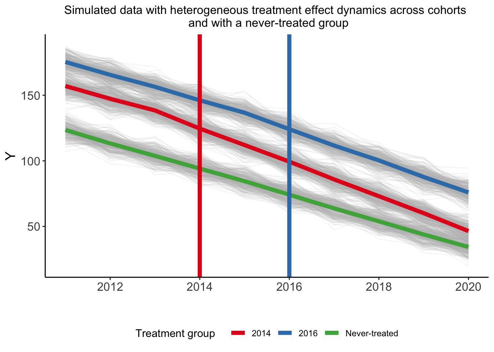
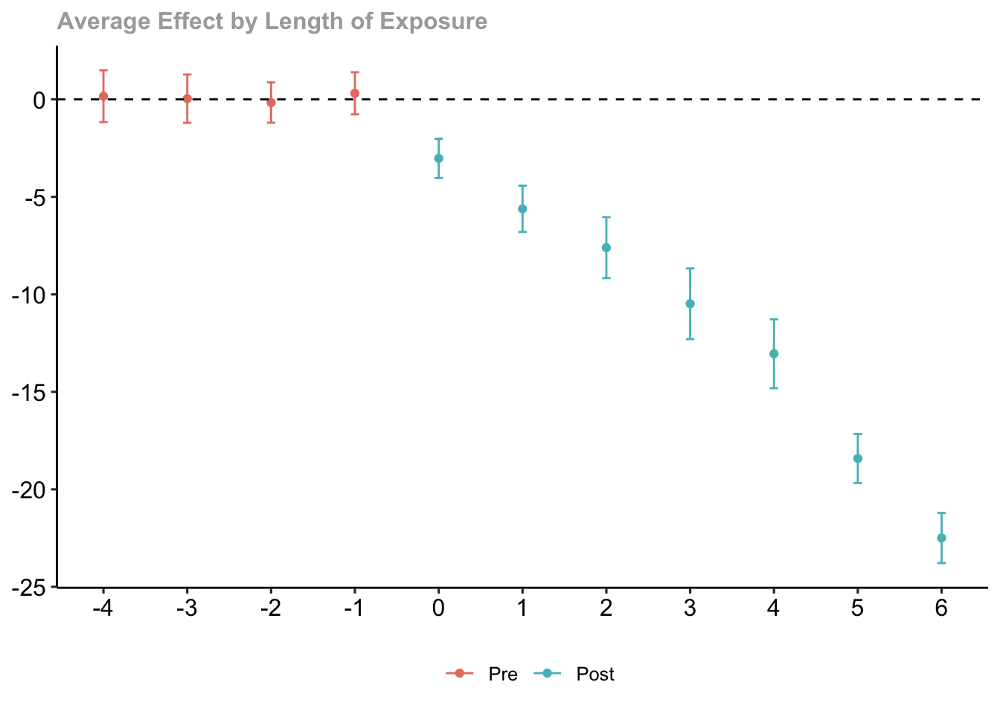
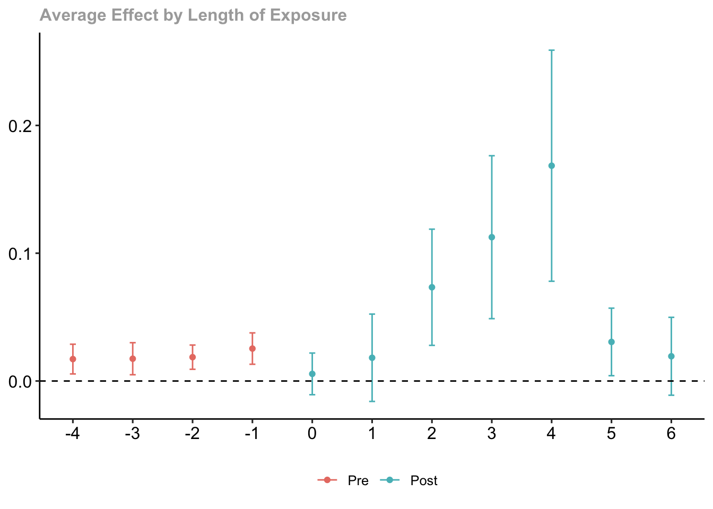

Difference-in-Differences with Heterogenous Treatment Effects
Author
Sam Harper
Published
March 1, 2024
Setup
Simulate data with strong downward trend, parallel trends on the absolute scale in the pre-intervention period, heterogeneous treatment effects for two treatment cohorts, and several never treated cohorts.
Code
set.seed(4863)library(here)library(tidyverse)library(modelsummary)# unit fixed effects (unobserved heterogeneity)unit <-tibble(unit =1:1000,# generate clustersstate =sample(1:30, 1000, replace =TRUE),unit_fe =rnorm(1000, state/10, 1),# generate instantaneous treatment effect#mu = rnorm(nobs, true_mu, 0.2)mu =2)# year fixed effects (first part)year <-tibble(year =2011:2020,year_fe =rnorm(length(year), 0, 0.5))# Put the clusters into treatment groupstreat_taus <-tibble(# sample the clusters randomlystate =sample(1:30, 30, replace =FALSE),# place the randomly sampled states into 1\{t \ge g \}G_gcohort_year =sort(rep(c(2014, 2016, 2018), 10)))# make main dataset# full interaction of unit X year dk <-expand_grid(unit =1:1000, year =2011:2020) %>%left_join(., unit) %>%left_join(., year) %>%left_join(., treat_taus) %>%# make error term and get treatment indicators and treatment effects# Also get cohort specific trends (modify time FE)mutate(error =rnorm(1000*10, 0, 5),treat =ifelse((year >= cohort_year)*(cohort_year !=2018), 1, 0),# treatment effect = 1 if 2016, 2 if 2014, annuallymu =ifelse(cohort_year==2016, -2, -3),tau =ifelse(treat ==1, mu, 0),year_fe = year_fe +10*(year - cohort_year) ) %>%# calculate cumulative treatment effectsgroup_by(unit) %>%mutate(tau_cum =cumsum(tau)) %>%ungroup() %>%# calculate the dependent variablemutate(y =120+ (2020- cohort_year) + unit_fe - year_fe + tau_cum + error) %>%# Relabel 2018 cohort as never-treatedmutate(y =ifelse(cohort_year==2018, y-70, y),cohort_year =ifelse(cohort_year ==2018, Inf, cohort_year),log_y =log(y))
Let’s make a plot of the time trends for each of the treatment cohorts:
Code
theme_set(theme_classic() +theme(plot.background =element_blank()))plot_k <- dk %>%ggplot(aes(x = year, y = y, group = unit)) +geom_line(alpha =1/8, color ="grey") +geom_line(data = dk %>%group_by(cohort_year, year) %>%summarize(y =mean(y)),aes(x = year, y = y, group =factor(cohort_year),color =factor(cohort_year)), linewidth =2) +labs(x ="", y ="Y", color ="Treatment group ") +scale_x_continuous(breaks =c(2012, 2014, 2016, 2018, 2020)) +geom_vline(xintercept =2014, color ='#E41A1C', linewidth =2) +geom_vline(xintercept =2016, color ='#377EB8', linewidth =2) +scale_color_brewer(palette ='Set1') +theme(legend.position ='bottom',#legend.title = element_blank(), axis.title =element_text(size =14),axis.text =element_text(size =12)) +scale_color_manual(labels =c("2014", "2016", "Never-treated"),values =c("#E41A1C", "#377EB8", "#4DAF4A")) +ggtitle("Simulated data with heterogeneous treatment effect dynamics across cohorts \n and with a never-treated group")+theme(plot.title =element_text(hjust =0.5, size=12))plot_k

Run Callaway-Sant’Anna on the absolute linear scale and look at the dynamic treatment effects:
Code
# Callaway-Sant'Anna for linear Ycsk <- did::att_gt(yname ="y", tname ="year",idname ="unit",gname ="cohort_year",control_group="notyettreated",bstrap =TRUE,clustervars ="state",data = dk,print_details =FALSE)csk_simple <- did::aggte(csk, type ="simple")# did::ggdid(csk, type = "simple")csk_event <- did::aggte(csk, type ="dynamic")did::ggdid(csk_event)

Code
# modelsummary(list("CS: Dynamic" = csk_event),# shape = term ~ model + statistic, # statistic = c("({std.error})", "conf.int"),# gof_omit ='_*')
Now on the log scale:
Code
csk_l <- did::att_gt(yname ="log_y", tname ="year",idname ="unit",gname ="cohort_year",control_group="notyettreated",bstrap =TRUE,clustervars ="state",data = dk,print_details =FALSE)csk_l_simple <- did::aggte(csk_l, type ="simple")# did::ggdid(csk_l, type = "simple")csk_l_event <- did::aggte(csk_l, type ="dynamic")did::ggdid(csk_l_event)

Tests of pre-trends
Code
dkp <- dk %>%filter(year<2014) %>%mutate(ever_treated =ifelse(cohort_year!=Inf,1,0),time_since_2011 = year -2011)pty = fixest::feols( y ~ ever_treated*time_since_2011,data = dkp,vcov =~state)ptly = fixest::feols( log_y ~ ever_treated*time_since_2011,data = dkp,vcov =~state)modelsummary(list("Y scale"= pty, "Log Y scale"= ptly),shape = term ~ model + statistic, statistic ="conf.int",gof_omit ='DF|Deviance|R2|AIC|BIC|Log.Lik|ICC|RMSE')
Y scale
Log Y scale
Est.
2.5 %
97.5 %
Est.
2.5 %
97.5 %
(Intercept)
123.439
122.796
124.083
4.816
4.811
4.821
ever_treated
42.623
38.204
47.041
0.295
0.268
0.322
time_since_2011
−9.885
−10.285
−9.485
−0.087
−0.091
−0.084
ever_treated × time_since_2011
0.490
−0.009
0.989
0.027
0.023
0.031
Num.Obs.
3000
3000
Std.Errors
by: state
by: state
Importance of clustering
Code
csku <- did::att_gt(yname ="y", tname ="year",idname ="unit",gname ="cohort_year",control_group="notyettreated",bstrap =TRUE,data = dk,print_details =FALSE)csku_event <- did::aggte(csku, type ="dynamic")modelsummary(list("Clustered by state"= csk_event,"Not clustered"= csku_event),shape = term ~ model + statistic, statistic ="({std.error})",gof_omit ='_*')